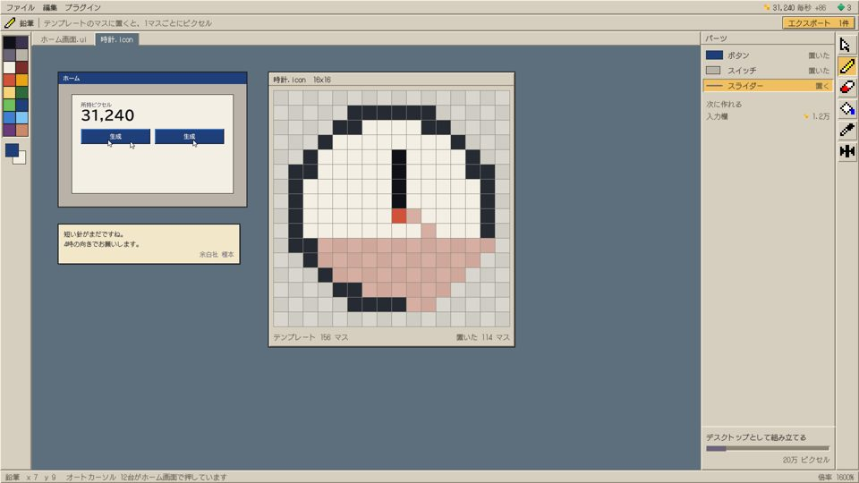

ソフト広場パソコンソフトを探すなら「ソフト広場」
ソフトライブラリソフトを買う作者の登録
検索
トップ - ライブラリ - Windows - 新着ソフト - ランキング - 新着コメント
新着ソフトレビュー2026-11-01
トップ > ライブラリ > あおぞら 試作版 v0.1
あおぞら 試作版 v0.1
ボタン1つの画面を、自分の手で育てていく作業ソフト！
あおぞら（作者：ゆうさん）
素の画面から始めて、色・書体・配置・動きを順に組み込んでいく
起動すると、白い画面にボタンが1つだけ。押して集めたピクセルで、枠線・色・書体・配置・動きを1つずつ組み込んでいきます。作ったものはそのまま画面になり、使えば使うほど自分の画面に育ちます。
内蔵のペイントソフト「Tessera」では、アイコンを1ドットずつ描いて書き出せます。描いたアイコンは、次の版でも下絵として残ります。試作版のため、色数は16色までです。
>> ダウンロードページへ
ソフト広場で購入する

あおぞら 試作版 v0.1
ボタン1つから画面を育てる作業ソフト シェアウェア $1.99
詳細／購入あおぞら 試作版 v0.1 画面1 あおぞら 試作版 v0.1 画面2
あおぞら 試作版 v0.1 画面2
あおぞら 試作版 v0.1 画面2最近のレビュー記事
あおぞら 試作版 v0.1
ボタン1つから画面を育てる作業ソフト
かんたん付箋 2.3
デスクトップに付箋を貼れる
こよみ帳 1.8
祝日入りのカレンダー
ファイル名一括変換 4.0
名前をまとめて変更